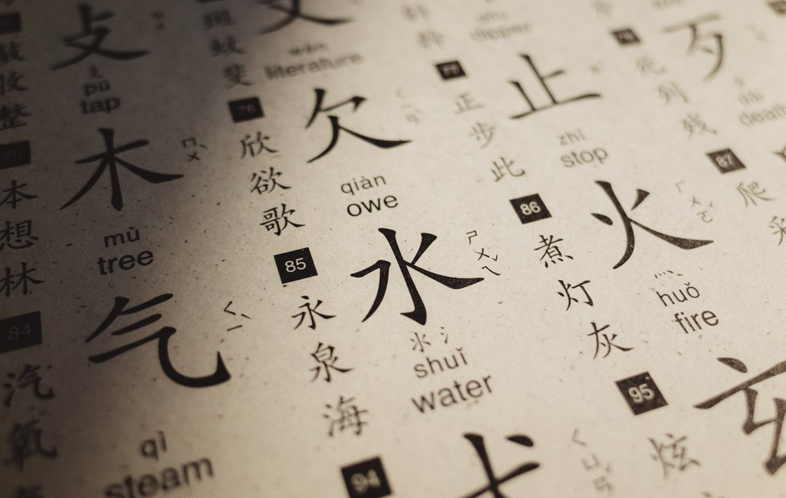

Китайский язык — язык или языковая ветвь сино-тибетской языковой семьи. Первоначально был языком основной этнической группы Китая — народа хань.
Распространён: в стандартной форме — официальный язык КНР, Тайваня и Сингапура, а также один из шести официальных и рабочих языков ООН.
Тональность — одно и то же сочетание звуков, произнесённое с разной интонацией, образует разные слова с различными значениями.
Ограниченное количество возможных слогов — в китайском языке существует около 400 слогов (без учёта тонов). Это приводит к высокой омофонии — много слов звучат одинаково и различаются только контекстом или письменно (разные иероглифы).
Отсутствие склонений и спряжений — форма глаголов и существительных не изменяется в зависимости от падежа, числа или времени.
Фиксированный порядок слов — подлежащее обычно стоит перед сказуемым, а определение — перед определяемым словом.
Один из самых сложных в изучении языков. Сейчас особенно распространен в России. Красивый, мелодичный, шустрый и точно также меняется в зависимости от того, в какой части КНР или страны, где он официальный, вы находитесь.